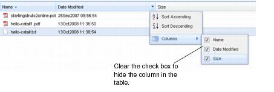
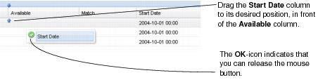
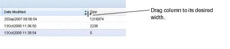

Sorting and grouping tables Tables are used to display information in the work area. Configure which column is displayed To configure which column is displayed in the table: 1. Click a column header arrow to display the shortcut menu. 2. Select or clear the check box for available columns (default is checked). The columns are displayed automatically, and a column with a cleared check box is not displayed in the table. Your display settings are saved as a personal setting and will be used as the default setting next time you start the system.  Reorder columns To reorder columns, click a column header and drag it to the desired location. Your display settings are saved as a personal setting and will be used as the default setting next time you start the system.  Increase or decrease column size To increase or decrease column size, hover over the dividing line between the column headers and drag it to its desired width. The column is resized.  Note This setting is not saved as a personal setting. Sort table by column The tables displayed in the work area can be sorted. To sort table by column: 1. Click table header arrow. A shortcut menu is displayed with sorting alternatives. 2. Select one of the following alternatives: Sort Ascending Sort in ascending order. Shortcut: Click the column header. Sort Descending Sort in descending order. Shortcut: Click the column header. Your display settings are saved as a personal setting and will be used as the default setting next time you start the system. Note Sorting may not be possible for certain columns, where applicable. Revert to default To restore the modified table settings to default: 1. From the table header arrow, select the Revert to default command. A confirmation window is displayed. 2. To confirm, click Yes. The table settings are restored to default. Paging tables Tables in work areas and windows can be divided into a number of pages, each displaying a subset of the table. To navigate the table, use the page bar. Displays first page in the table. Displays previous page in the table. Displays page number in the table. To go to another page, enter the page number. Displays next page in the table. Displays last page in the table Refreshes table contents.